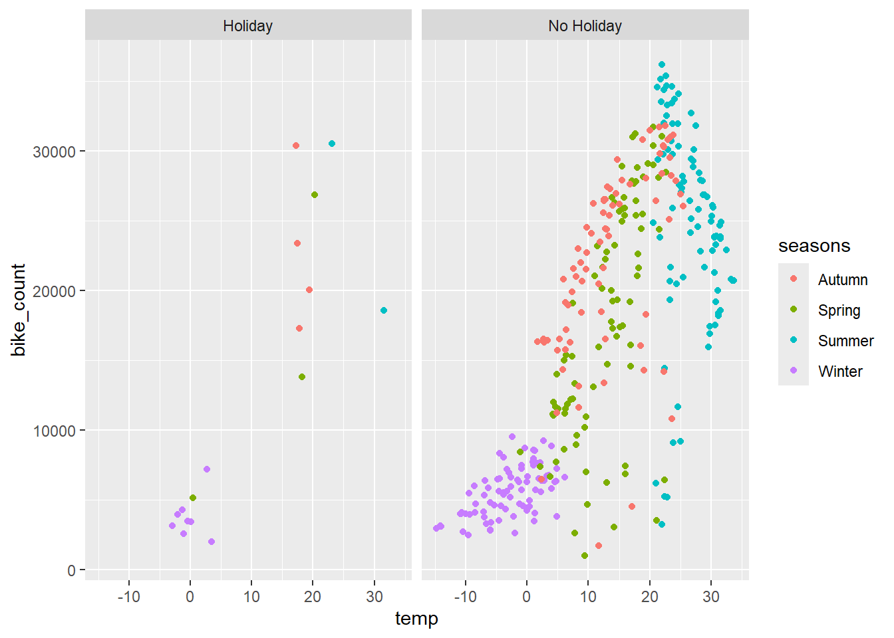
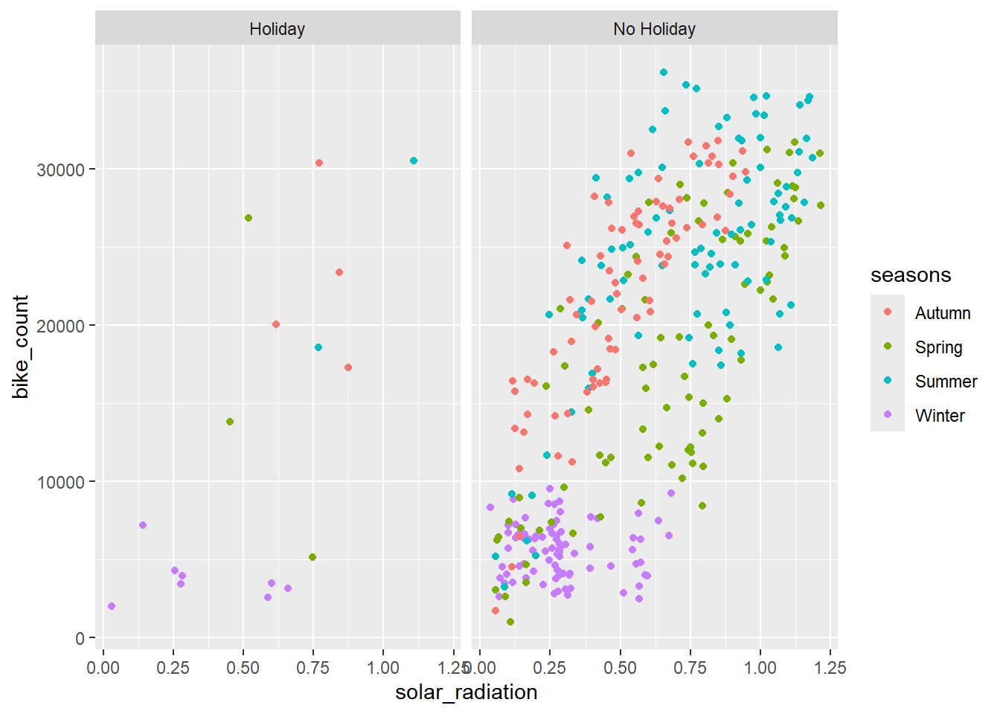
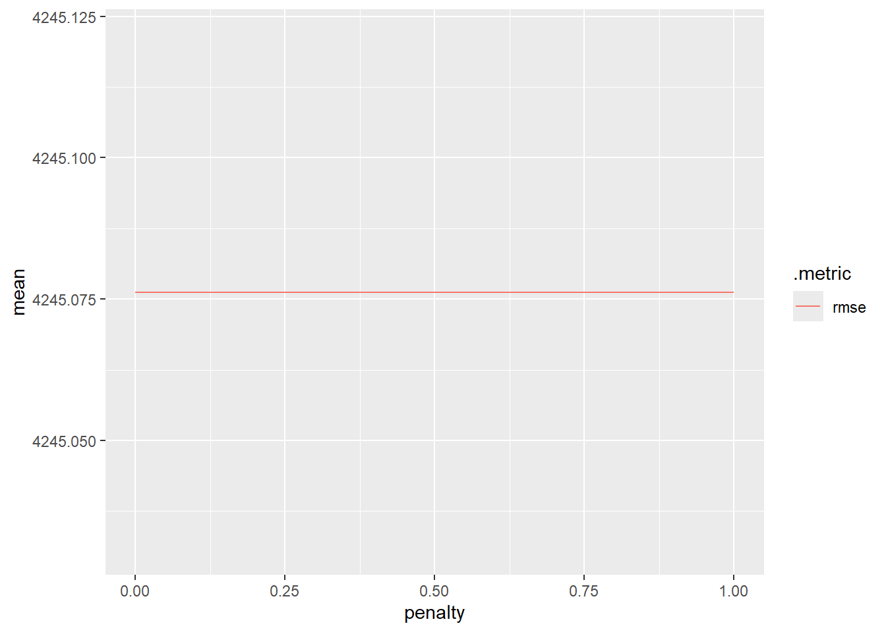
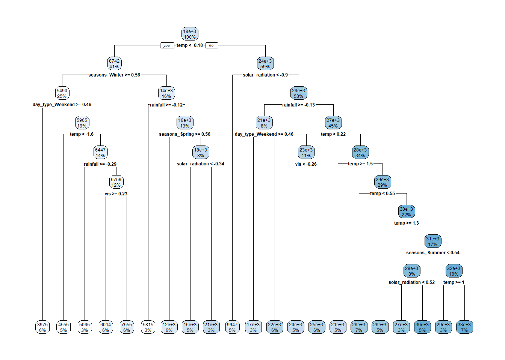
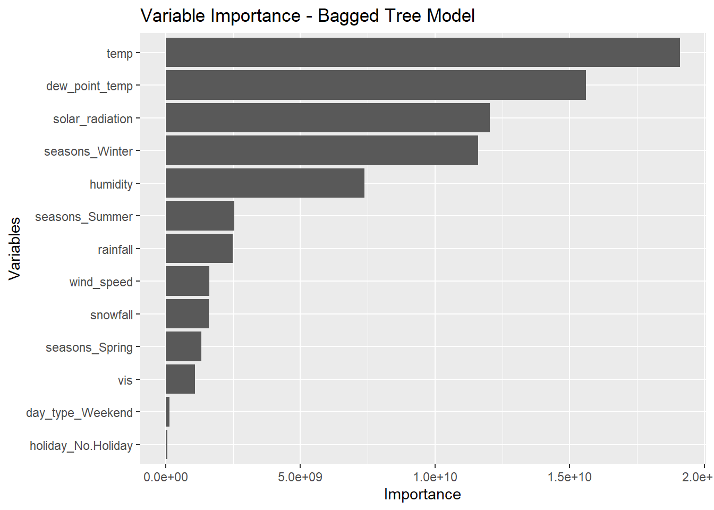
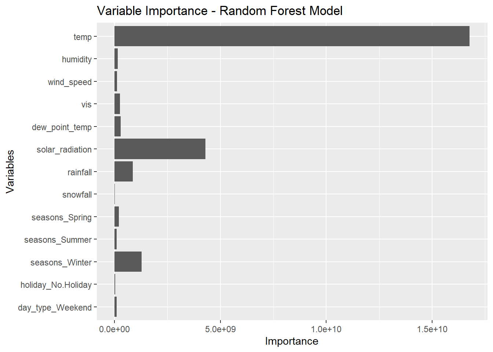

library(tidyverse)
library(lubridate)
library(tidymodels)
library(workflows)
library(glmnet)
library(tree)
library(rpart)
library(rpart.plot)
library(baguette)
library(ranger)More Modeling
Reading in Data
Here I am using encoding = “latin1” to deal with the file that includes non-ASCII characters such as “Temperature(캜)”.
bike_data <- readr::read_csv("SeoulBikeData.csv", locale = readr::locale(encoding = "latin1"))Rows: 8760 Columns: 14
── Column specification ────────────────────────────────────────────────────────
Delimiter: ","
chr (4): Date, Seasons, Holiday, Functioning Day
dbl (10): Rented Bike Count, Hour, Temperature(°C), Humidity(%), Wind speed ...
ℹ Use `spec()` to retrieve the full column specification for this data.
ℹ Specify the column types or set `show_col_types = FALSE` to quiet this message.Adjusting the date format and inspecting column values
bike_data <- bike_data |>
mutate(date = lubridate::dmy(Date)) |>
select(-Date)
summary(bike_data) Rented Bike Count Hour Temperature(°C) Humidity(%)
Min. : 0.0 Min. : 0.00 Min. :-17.80 Min. : 0.00
1st Qu.: 191.0 1st Qu.: 5.75 1st Qu.: 3.50 1st Qu.:42.00
Median : 504.5 Median :11.50 Median : 13.70 Median :57.00
Mean : 704.6 Mean :11.50 Mean : 12.88 Mean :58.23
3rd Qu.:1065.2 3rd Qu.:17.25 3rd Qu.: 22.50 3rd Qu.:74.00
Max. :3556.0 Max. :23.00 Max. : 39.40 Max. :98.00
Wind speed (m/s) Visibility (10m) Dew point temperature(°C)
Min. :0.000 Min. : 27 Min. :-30.600
1st Qu.:0.900 1st Qu.: 940 1st Qu.: -4.700
Median :1.500 Median :1698 Median : 5.100
Mean :1.725 Mean :1437 Mean : 4.074
3rd Qu.:2.300 3rd Qu.:2000 3rd Qu.: 14.800
Max. :7.400 Max. :2000 Max. : 27.200
Solar Radiation (MJ/m2) Rainfall(mm) Snowfall (cm) Seasons
Min. :0.0000 Min. : 0.0000 Min. :0.00000 Length:8760
1st Qu.:0.0000 1st Qu.: 0.0000 1st Qu.:0.00000 Class :character
Median :0.0100 Median : 0.0000 Median :0.00000 Mode :character
Mean :0.5691 Mean : 0.1487 Mean :0.07507
3rd Qu.:0.9300 3rd Qu.: 0.0000 3rd Qu.:0.00000
Max. :3.5200 Max. :35.0000 Max. :8.80000
Holiday Functioning Day date
Length:8760 Length:8760 Min. :2017-12-01
Class :character Class :character 1st Qu.:2018-03-02
Mode :character Mode :character Median :2018-06-01
Mean :2018-06-01
3rd Qu.:2018-08-31
Max. :2018-11-30 Turning variables into factors
bike_data <- bike_data |>
mutate(seasons = factor(Seasons),
holiday = factor(Holiday),
fn_day = factor(`Functioning Day`)) |>
select(-Seasons, -Holiday, -`Functioning Day`)Renaming variables
bike_data <- bike_data |>
rename('bike_count' = `Rented Bike Count`,
'hour' = "Hour",
"temp" = `Temperature(°C)`,
"wind_speed" = `Wind speed (m/s)`,
"humidity" = `Humidity(%)`,
"vis" = `Visibility (10m)`,
"dew_point_temp" = `Dew point temperature(°C)`,
"solar_radiation" = `Solar Radiation (MJ/m2)`,
"rainfall" = "Rainfall(mm)",
"snowfall" = `Snowfall (cm)`)Removing days where they aren’t in operation
bike_data <- bike_data |>
filter(fn_day == "Yes") |>
select(-fn_day)Summarizing across the hours so each day has one observation
bike_data <- bike_data |>
group_by(date, seasons, holiday) |>
summarize(bike_count = sum(bike_count),
temp = mean(temp),
humidity = mean(humidity),
wind_speed = mean(wind_speed),
vis = mean(vis),
dew_point_temp = mean(dew_point_temp),
solar_radiation = mean(solar_radiation),
rainfall = sum(rainfall),
snowfall = sum(snowfall)) |>
ungroup()`summarise()` has grouped output by 'date', 'seasons'. You can override using
the `.groups` argument.bike_data# A tibble: 353 × 12
date seasons holiday bike_count temp humidity wind_speed vis
<date> <fct> <fct> <dbl> <dbl> <dbl> <dbl> <dbl>
1 2017-12-01 Winter No Holiday 9539 -2.45 45.9 1.54 1871.
2 2017-12-02 Winter No Holiday 8523 1.32 62.0 1.71 1471.
3 2017-12-03 Winter No Holiday 7222 4.88 81.5 1.61 456.
4 2017-12-04 Winter No Holiday 8729 -0.304 52.5 3.45 1363.
5 2017-12-05 Winter No Holiday 8307 -4.46 36.4 1.11 1959.
6 2017-12-06 Winter No Holiday 6669 0.0458 70.8 0.696 1187.
7 2017-12-07 Winter No Holiday 8549 1.09 67.5 1.69 949.
8 2017-12-08 Winter No Holiday 8032 -3.82 41.8 1.85 1872.
9 2017-12-09 Winter No Holiday 7233 -0.846 46 1.08 1861.
10 2017-12-10 Winter No Holiday 3453 1.19 69.7 2.00 1043.
# ℹ 343 more rows
# ℹ 4 more variables: dew_point_temp <dbl>, solar_radiation <dbl>,
# rainfall <dbl>, snowfall <dbl>EDA
Checking for missing values, there does not appear to be any.
sum_na <- function(column){
sum(is.na(column))
}
na_counts <- bike_data |>
summarize(across(everything(), sum_na))
na_counts# A tibble: 1 × 12
date seasons holiday bike_count temp humidity wind_speed vis
<int> <int> <int> <int> <int> <int> <int> <int>
1 0 0 0 0 0 0 0 0
# ℹ 4 more variables: dew_point_temp <int>, solar_radiation <int>,
# rainfall <int>, snowfall <int>Basic summary stats for numeric variables focusing on bike_count.
bike_data |>
summarize(across(`bike_count`,.fns = c("mean" = mean,
"median" = median,
"sd" = sd,
"IQR" = IQR,
"min" = min,
"max" = max),
.names = "{.col}_{.fn}"))# A tibble: 1 × 6
bike_count_mean bike_count_median bike_count_sd bike_count_IQR bike_count_min
<dbl> <dbl> <dbl> <dbl> <dbl>
1 17485. 18563 9937. 19318 977
# ℹ 1 more variable: bike_count_max <dbl>Looking at different groupings.
bike_data |>
group_by(seasons, holiday) |>
summarize(across(`bike_count`,
.fns = c("mean" = mean,
"median" = median,
"sd" = sd,
"IQR" = IQR,
"min" = min,
"max" = max),
.names = "{.col}_{.fn}"))`summarise()` has grouped output by 'seasons'. You can override using the
`.groups` argument.# A tibble: 8 × 8
# Groups: seasons [4]
seasons holiday bike_count_mean bike_count_median bike_count_sd bike_count_IQR
<fct> <fct> <dbl> <dbl> <dbl> <dbl>
1 Autumn Holiday 22754. 21705 5642. 5740
2 Autumn No Hol… 22065. 23472 6792. 10734
3 Spring Holiday 15247. 13790 10917. 10844
4 Spring No Hol… 18002. 17730 8322. 14224.
5 Summer Holiday 24532. 24532. 8438. 5966.
6 Summer No Hol… 24824. 25572. 7324. 9165
7 Winter Holiday 3759 3454. 1561. 1060.
8 Winter No Hol… 5574. 5609 1757. 2564
# ℹ 2 more variables: bike_count_min <dbl>, bike_count_max <dbl>Exploring correlation – There are a few variables like temp and dew_point that are highly correlated.
bike_data |>
select(where(is.numeric)) |>
cor() |>
round(3) bike_count temp humidity wind_speed vis dew_point_temp
bike_count 1.000 0.753 0.036 -0.193 0.166 0.650
temp 0.753 1.000 0.404 -0.261 0.002 0.963
humidity 0.036 0.404 1.000 -0.234 -0.559 0.632
wind_speed -0.193 -0.261 -0.234 1.000 0.206 -0.288
vis 0.166 0.002 -0.559 0.206 1.000 -0.154
dew_point_temp 0.650 0.963 0.632 -0.288 -0.154 1.000
solar_radiation 0.736 0.550 -0.274 0.096 0.271 0.383
rainfall -0.239 0.145 0.529 -0.102 -0.222 0.265
snowfall -0.265 -0.267 0.065 0.021 -0.102 -0.210
solar_radiation rainfall snowfall
bike_count 0.736 -0.239 -0.265
temp 0.550 0.145 -0.267
humidity -0.274 0.529 0.065
wind_speed 0.096 -0.102 0.021
vis 0.271 -0.222 -0.102
dew_point_temp 0.383 0.265 -0.210
solar_radiation 1.000 -0.323 -0.233
rainfall -0.323 1.000 -0.023
snowfall -0.233 -0.023 1.000Exploring plots to see relationships. It makes sense that we see the most bikes being rented in summer months.
ggplot(bike_data, aes(x = temp, y = bike_count)) +
geom_jitter(aes(color = seasons)) +
facet_grid(~holiday)
ggplot(bike_data, aes(x = solar_radiation, y = bike_count)) +
geom_point(aes(color = seasons)) +
facet_grid(~holiday)
Splitting the Data
Using functions from tidymodels to split the data and add in the stratification. Then applying 10-fold cross validation to the training set.
set.seed(10)
bike_split <- initial_split(bike_data, prop = 0.75, strata = seasons)
bike_train <- training(bike_split)
bike_test <- testing(bike_split)
bike_10_fold <- vfold_cv(bike_train, 10)Creating the first recipe.
bike_recipe1 <- recipe(bike_count ~ ., data = bike_train) |>
step_date(date, features = "dow") |>
step_mutate(day_type = factor(if_else(date_dow %in% c("Sat", "Sun"), "Weekend", "Weekday"))) |>
step_rm(date, date_dow) |>
step_dummy(seasons, holiday, day_type) |>
step_normalize(all_numeric(), -bike_count)
bike_recipe1── Recipe ──────────────────────────────────────────────────────────────────────── Inputs Number of variables by roleoutcome: 1
predictor: 11── Operations • Date features from: date• Variable mutation for: factor(if_else(date_dow %in% c("Sat", "Sun"),
"Weekend", "Weekday"))• Variables removed: date and date_dow• Dummy variables from: seasons, holiday, day_type• Centering and scaling for: all_numeric() and -bike_countFitting MLR Model
Setting up the linear model fit and fitting the models to determine best performance.
bike_mlr <- linear_reg() |>
set_engine("lm")
mlr_wfl <- workflow() |>
add_recipe(bike_recipe1) |>
add_model(bike_mlr)
mlr_fit <- mlr_wfl |>
fit_resamples(bike_10_fold)
mlr_fit |> collect_metrics()# A tibble: 2 × 6
.metric .estimator mean n std_err .config
<chr> <chr> <dbl> <int> <dbl> <chr>
1 rmse standard 4248. 10 226. Preprocessor1_Model1
2 rsq standard 0.813 10 0.0197 Preprocessor1_Model1mlr_final <- mlr_wfl |>
fit(bike_train)
tidy(mlr_final)# A tibble: 14 × 5
term estimate std.error statistic p.value
<chr> <dbl> <dbl> <dbl> <dbl>
1 (Intercept) 17794. 261. 68.1 4.99e-163
2 temp -2000. 4672. -0.428 6.69e- 1
3 humidity -1958. 1748. -1.12 2.64e- 1
4 wind_speed -600. 303. -1.98 4.89e- 2
5 vis -178. 381. -0.466 6.42e- 1
6 dew_point_temp 6605. 5455. 1.21 2.27e- 1
7 solar_radiation 4070. 491. 8.29 7.20e- 15
8 rainfall -1644. 340. -4.83 2.36e- 6
9 snowfall -351. 284. -1.24 2.17e- 1
10 seasons_Spring -2127. 373. -5.70 3.35e- 8
11 seasons_Summer -1598. 466. -3.43 7.02e- 4
12 seasons_Winter -3649. 504. -7.24 5.41e- 12
13 holiday_No.Holiday 638. 268. 2.38 1.80e- 2
14 day_type_Weekend -1190. 266. -4.48 1.13e- 5Fitting LASSO Model
Setting up the LASSO model and using penalty = tune() to choose the parameter
bike_lasso <- linear_reg(penalty = tune(), mixture = 1) |>
set_engine("glmnet")
lasso_wfl <- workflow() |>
add_recipe(bike_recipe1) |>
add_model(bike_lasso)
lasso_wfl══ Workflow ════════════════════════════════════════════════════════════════════
Preprocessor: Recipe
Model: linear_reg()
── Preprocessor ────────────────────────────────────────────────────────────────
5 Recipe Steps
• step_date()
• step_mutate()
• step_rm()
• step_dummy()
• step_normalize()
── Model ───────────────────────────────────────────────────────────────────────
Linear Regression Model Specification (regression)
Main Arguments:
penalty = tune()
mixture = 1
Computational engine: glmnet Fitting the model with the tuning parameter.
lasso_grid <- lasso_wfl |>
tune_grid(resamples = bike_10_fold,
grid = grid_regular(penalty(), levels = 200))
lasso_grid[1, ".metrics"][[1]][[1]]
# A tibble: 400 × 5
penalty .metric .estimator .estimate .config
<dbl> <chr> <chr> <dbl> <chr>
1 1 e-10 rmse standard 2776. Preprocessor1_Model001
2 1.12e-10 rmse standard 2776. Preprocessor1_Model002
3 1.26e-10 rmse standard 2776. Preprocessor1_Model003
4 1.41e-10 rmse standard 2776. Preprocessor1_Model004
5 1.59e-10 rmse standard 2776. Preprocessor1_Model005
6 1.78e-10 rmse standard 2776. Preprocessor1_Model006
7 2.00e-10 rmse standard 2776. Preprocessor1_Model007
8 2.25e-10 rmse standard 2776. Preprocessor1_Model008
9 2.52e-10 rmse standard 2776. Preprocessor1_Model009
10 2.83e-10 rmse standard 2776. Preprocessor1_Model010
# ℹ 390 more rowsExamining the rmse values and plotting them to find the best selection. From discussion post, it doesn’t seem like the flat line on the plot is an issue.
lasso_grid |>
collect_metrics() |>
filter(.metric == "rmse")# A tibble: 200 × 7
penalty .metric .estimator mean n std_err .config
<dbl> <chr> <chr> <dbl> <int> <dbl> <chr>
1 1 e-10 rmse standard 4245. 10 233. Preprocessor1_Model001
2 1.12e-10 rmse standard 4245. 10 233. Preprocessor1_Model002
3 1.26e-10 rmse standard 4245. 10 233. Preprocessor1_Model003
4 1.41e-10 rmse standard 4245. 10 233. Preprocessor1_Model004
5 1.59e-10 rmse standard 4245. 10 233. Preprocessor1_Model005
6 1.78e-10 rmse standard 4245. 10 233. Preprocessor1_Model006
7 2.00e-10 rmse standard 4245. 10 233. Preprocessor1_Model007
8 2.25e-10 rmse standard 4245. 10 233. Preprocessor1_Model008
9 2.52e-10 rmse standard 4245. 10 233. Preprocessor1_Model009
10 2.83e-10 rmse standard 4245. 10 233. Preprocessor1_Model010
# ℹ 190 more rowslasso_grid |>
collect_metrics() |>
filter(.metric == "rmse") |>
ggplot(aes(penalty, mean, color = .metric)) +
geom_line()
Selecting the best model and finalizing the workflow
lowest_rmse <- lasso_grid |>
select_best(metric = "rmse")
lowest_rmse# A tibble: 1 × 2
penalty .config
<dbl> <chr>
1 0.0000000001 Preprocessor1_Model001lasso_wfl |>
finalize_workflow(lowest_rmse)══ Workflow ════════════════════════════════════════════════════════════════════
Preprocessor: Recipe
Model: linear_reg()
── Preprocessor ────────────────────────────────────────────────────────────────
5 Recipe Steps
• step_date()
• step_mutate()
• step_rm()
• step_dummy()
• step_normalize()
── Model ───────────────────────────────────────────────────────────────────────
Linear Regression Model Specification (regression)
Main Arguments:
penalty = 1e-10
mixture = 1
Computational engine: glmnet Fitting on entire training set
lasso_final <- lasso_wfl |>
finalize_workflow(lowest_rmse) |>
fit(bike_train)
tidy(lasso_final)# A tibble: 14 × 3
term estimate penalty
<chr> <dbl> <dbl>
1 (Intercept) 17794. 0.0000000001
2 temp 59.5 0.0000000001
3 humidity -1173. 0.0000000001
4 wind_speed -606. 0.0000000001
5 vis -124. 0.0000000001
6 dew_point_temp 4132. 0.0000000001
7 solar_radiation 4054. 0.0000000001
8 rainfall -1691. 0.0000000001
9 snowfall -367. 0.0000000001
10 seasons_Spring -2107. 0.0000000001
11 seasons_Summer -1548. 0.0000000001
12 seasons_Winter -3626. 0.0000000001
13 holiday_No.Holiday 628. 0.0000000001
14 day_type_Weekend -1198. 0.0000000001Fitting Regression Tree Model
Setting up the regression tree model and tuning parameters
bike_reg <- decision_tree(tree_depth = tune(),
min_n = 20,
cost_complexity = tune()) |>
set_engine("rpart") |>
set_mode("regression")Creating the workflow
reg_wfl <- workflow() |>
add_recipe(bike_recipe1) |>
add_model(bike_reg)Examining tuning parameters.
reg_grid <- grid_regular(cost_complexity(),
tree_depth(),
levels = c(10, 5))
reg_fits <- reg_wfl |>
tune_grid(resamples = bike_10_fold,
grid = reg_grid)
reg_fits |>
collect_metrics()# A tibble: 100 × 8
cost_complexity tree_depth .metric .estimator mean n std_err .config
<dbl> <int> <chr> <chr> <dbl> <int> <dbl> <chr>
1 0.0000000001 1 rmse standard 6676. 10 309. Prepro…
2 0.0000000001 1 rsq standard 0.558 10 0.0463 Prepro…
3 0.000000001 1 rmse standard 6676. 10 309. Prepro…
4 0.000000001 1 rsq standard 0.558 10 0.0463 Prepro…
5 0.00000001 1 rmse standard 6676. 10 309. Prepro…
6 0.00000001 1 rsq standard 0.558 10 0.0463 Prepro…
7 0.0000001 1 rmse standard 6676. 10 309. Prepro…
8 0.0000001 1 rsq standard 0.558 10 0.0463 Prepro…
9 0.000001 1 rmse standard 6676. 10 309. Prepro…
10 0.000001 1 rsq standard 0.558 10 0.0463 Prepro…
# ℹ 90 more rowsFinding the best value and selecting the models best tuning parameter values.
reg_fits |>
collect_metrics() |>
filter(.metric == "rmse") |>
arrange( mean)# A tibble: 50 × 8
cost_complexity tree_depth .metric .estimator mean n std_err .config
<dbl> <int> <chr> <chr> <dbl> <int> <dbl> <chr>
1 0.0000000001 11 rmse standard 4020. 10 184. Preprocess…
2 0.000000001 11 rmse standard 4020. 10 184. Preprocess…
3 0.00000001 11 rmse standard 4020. 10 184. Preprocess…
4 0.0000001 11 rmse standard 4020. 10 184. Preprocess…
5 0.000001 11 rmse standard 4020. 10 184. Preprocess…
6 0.00001 11 rmse standard 4020. 10 184. Preprocess…
7 0.0001 11 rmse standard 4020. 10 184. Preprocess…
8 0.0000000001 15 rmse standard 4020. 10 184. Preprocess…
9 0.000000001 15 rmse standard 4020. 10 184. Preprocess…
10 0.00000001 15 rmse standard 4020. 10 184. Preprocess…
# ℹ 40 more rowsreg_best_params <- select_best(reg_fits, metric = "rmse")
reg_best_params# A tibble: 1 × 3
cost_complexity tree_depth .config
<dbl> <int> <chr>
1 0.0000000001 11 Preprocessor1_Model31Fitting Bagged Tree Model
Setting up the bagged tree model and tuning parameters.
bike_bag <- bag_tree(tree_depth = tune(),
min_n = 20,
cost_complexity = tune()) |>
set_engine("rpart") |>
set_mode("regression")Setting up the workflow.
bag_wfl <- workflow() |>
add_recipe(bike_recipe1) |>
add_model(bike_bag)Fitting to cv folds
bag_grid <- grid_regular(cost_complexity(),
tree_depth(),
levels = c(10, 5))
bag_fits <- bag_wfl |>
tune_grid(resamples = bike_10_fold,
grid = bag_grid)
bag_fits |>
collect_metrics()# A tibble: 100 × 8
cost_complexity tree_depth .metric .estimator mean n std_err .config
<dbl> <int> <chr> <chr> <dbl> <int> <dbl> <chr>
1 0.0000000001 1 rmse standard 6285. 10 262. Prepro…
2 0.0000000001 1 rsq standard 0.615 10 0.0450 Prepro…
3 0.000000001 1 rmse standard 6320. 10 285. Prepro…
4 0.000000001 1 rsq standard 0.611 10 0.0472 Prepro…
5 0.00000001 1 rmse standard 6171. 10 273. Prepro…
6 0.00000001 1 rsq standard 0.632 10 0.0470 Prepro…
7 0.0000001 1 rmse standard 6153. 10 281. Prepro…
8 0.0000001 1 rsq standard 0.629 10 0.0451 Prepro…
9 0.000001 1 rmse standard 6309. 10 253. Prepro…
10 0.000001 1 rsq standard 0.611 10 0.0437 Prepro…
# ℹ 90 more rowsFinding the smallest rmse value and selecting the models best tuning parameter values.
bag_fits |>
collect_metrics() |>
filter(.metric == "rmse") |>
arrange(mean)# A tibble: 50 × 8
cost_complexity tree_depth .metric .estimator mean n std_err .config
<dbl> <int> <chr> <chr> <dbl> <int> <dbl> <chr>
1 0.00001 15 rmse standard 3116. 10 165. Preprocess…
2 0.00001 11 rmse standard 3167. 10 145. Preprocess…
3 0.0000000001 8 rmse standard 3198. 10 200. Preprocess…
4 0.0000000001 11 rmse standard 3226. 10 147. Preprocess…
5 0.001 8 rmse standard 3243. 10 142. Preprocess…
6 0.00000001 15 rmse standard 3256. 10 126. Preprocess…
7 0.0001 11 rmse standard 3257. 10 191. Preprocess…
8 0.0000001 15 rmse standard 3260. 10 173. Preprocess…
9 0.0001 15 rmse standard 3274. 10 158. Preprocess…
10 0.000000001 8 rmse standard 3278. 10 173. Preprocess…
# ℹ 40 more rowsbag_best_params <- select_best(bag_fits, metric = "rmse")
bag_best_params# A tibble: 1 × 3
cost_complexity tree_depth .config
<dbl> <int> <chr>
1 0.00001 15 Preprocessor1_Model46Fitting Random Forest Model
Setting up the bagged tree model and tuning parameters.
bike_for <- rand_forest(mtry = tune(),
min_n = 20,)|>
set_engine("ranger", importance = "impurity") |>
set_mode("regression")Setting up the workflow.
for_wfl <- workflow() |>
add_recipe(bike_recipe1) |>
add_model(bike_for)Fitting to cv folds
for_grid <- grid_regular(
mtry(range = c(2, 15)),
levels = 10)
for_fits <- for_wfl |>
tune_grid(resamples = bike_10_fold,
grid = for_grid)→ A | warning: 15 columns were requested but there were 13 predictors in the data. 13 will be used.There were issues with some computations A: x1There were issues with some computations A: x3There were issues with some computations A: x5There were issues with some computations A: x8There were issues with some computations A: x10
There were issues with some computations A: x10for_fits |>
collect_metrics()# A tibble: 20 × 7
mtry .metric .estimator mean n std_err .config
<int> <chr> <chr> <dbl> <int> <dbl> <chr>
1 2 rmse standard 3876. 10 194. Preprocessor1_Model01
2 2 rsq standard 0.867 10 0.0160 Preprocessor1_Model01
3 3 rmse standard 3605. 10 183. Preprocessor1_Model02
4 3 rsq standard 0.879 10 0.0145 Preprocessor1_Model02
5 4 rmse standard 3478. 10 166. Preprocessor1_Model03
6 4 rsq standard 0.886 10 0.0129 Preprocessor1_Model03
7 6 rmse standard 3366. 10 143. Preprocessor1_Model04
8 6 rsq standard 0.892 10 0.0122 Preprocessor1_Model04
9 7 rmse standard 3315. 10 144. Preprocessor1_Model05
10 7 rsq standard 0.895 10 0.0117 Preprocessor1_Model05
11 9 rmse standard 3245. 10 150. Preprocessor1_Model06
12 9 rsq standard 0.898 10 0.0118 Preprocessor1_Model06
13 10 rmse standard 3223. 10 148. Preprocessor1_Model07
14 10 rsq standard 0.899 10 0.0123 Preprocessor1_Model07
15 12 rmse standard 3182. 10 163. Preprocessor1_Model08
16 12 rsq standard 0.901 10 0.0131 Preprocessor1_Model08
17 13 rmse standard 3155. 10 160. Preprocessor1_Model09
18 13 rsq standard 0.903 10 0.0130 Preprocessor1_Model09
19 15 rmse standard 3157. 10 160. Preprocessor1_Model10
20 15 rsq standard 0.903 10 0.0130 Preprocessor1_Model10Finding the smallest rmse value and selecting the models best tuning parameter values.
for_fits |>
collect_metrics() |>
filter(.metric == "rmse") |>
arrange(mean)# A tibble: 10 × 7
mtry .metric .estimator mean n std_err .config
<int> <chr> <chr> <dbl> <int> <dbl> <chr>
1 13 rmse standard 3155. 10 160. Preprocessor1_Model09
2 15 rmse standard 3157. 10 160. Preprocessor1_Model10
3 12 rmse standard 3182. 10 163. Preprocessor1_Model08
4 10 rmse standard 3223. 10 148. Preprocessor1_Model07
5 9 rmse standard 3245. 10 150. Preprocessor1_Model06
6 7 rmse standard 3315. 10 144. Preprocessor1_Model05
7 6 rmse standard 3366. 10 143. Preprocessor1_Model04
8 4 rmse standard 3478. 10 166. Preprocessor1_Model03
9 3 rmse standard 3605. 10 183. Preprocessor1_Model02
10 2 rmse standard 3876. 10 194. Preprocessor1_Model01for_best_params <- select_best(for_fits, metric = "rmse")
for_best_params# A tibble: 1 × 2
mtry .config
<int> <chr>
1 13 Preprocessor1_Model09Fitting each model on the test set
MLR model
mlr_wfl |>
last_fit(bike_split) |>
collect_metrics()# A tibble: 2 × 4
.metric .estimator .estimate .config
<chr> <chr> <dbl> <chr>
1 rmse standard 3531. Preprocessor1_Model1
2 rsq standard 0.881 Preprocessor1_Model1mlr_final |>
predict(bike_test) |>
pull() |>
rmse_vec(truth = bike_test$bike_count)[1] 3530.921almost_usual_fit <- extract_fit_parsnip(mlr_final)
usual_fit <- almost_usual_fit$fit
summary(usual_fit)
Call:
stats::lm(formula = ..y ~ ., data = data)
Residuals:
Min 1Q Median 3Q Max
-12000.1 -2551.0 308.9 2549.6 11719.7
Coefficients:
Estimate Std. Error t value Pr(>|t|)
(Intercept) 17793.9 261.1 68.141 < 2e-16 ***
temp -2000.1 4671.5 -0.428 0.668915
humidity -1957.8 1748.2 -1.120 0.263845
wind_speed -600.4 303.4 -1.979 0.048946 *
vis -177.6 380.9 -0.466 0.641540
dew_point_temp 6604.9 5454.9 1.211 0.227115
solar_radiation 4069.8 491.1 8.288 7.20e-15 ***
rainfall -1644.4 340.3 -4.833 2.36e-06 ***
snowfall -351.5 283.7 -1.239 0.216566
seasons_Spring -2126.9 373.0 -5.702 3.35e-08 ***
seasons_Summer -1598.2 465.7 -3.432 0.000702 ***
seasons_Winter -3649.3 503.7 -7.245 5.41e-12 ***
holiday_No.Holiday 637.9 267.8 2.382 0.017968 *
day_type_Weekend -1190.1 265.6 -4.481 1.13e-05 ***
---
Signif. codes: 0 '***' 0.001 '**' 0.01 '*' 0.05 '.' 0.1 ' ' 1
Residual standard error: 4235 on 249 degrees of freedom
Multiple R-squared: 0.8274, Adjusted R-squared: 0.8184
F-statistic: 91.8 on 13 and 249 DF, p-value: < 2.2e-16LASSO Model
lasso_wfl |>
finalize_workflow(lowest_rmse) |>
last_fit(bike_split) |>
collect_metrics()# A tibble: 2 × 4
.metric .estimator .estimate .config
<chr> <chr> <dbl> <chr>
1 rmse standard 3551. Preprocessor1_Model1
2 rsq standard 0.879 Preprocessor1_Model1lasso_final |>
predict(bike_test) |>
pull() |>
rmse_vec(truth = bike_test$bike_count)[1] 3551.146tidy(lasso_final)# A tibble: 14 × 3
term estimate penalty
<chr> <dbl> <dbl>
1 (Intercept) 17794. 0.0000000001
2 temp 59.5 0.0000000001
3 humidity -1173. 0.0000000001
4 wind_speed -606. 0.0000000001
5 vis -124. 0.0000000001
6 dew_point_temp 4132. 0.0000000001
7 solar_radiation 4054. 0.0000000001
8 rainfall -1691. 0.0000000001
9 snowfall -367. 0.0000000001
10 seasons_Spring -2107. 0.0000000001
11 seasons_Summer -1548. 0.0000000001
12 seasons_Winter -3626. 0.0000000001
13 holiday_No.Holiday 628. 0.0000000001
14 day_type_Weekend -1198. 0.0000000001Regression Tree Model
reg_final <- reg_wfl |>
finalize_workflow(reg_best_params)
reg_fit <- reg_final |>
last_fit(bike_split)
reg_fit# Resampling results
# Manual resampling
# A tibble: 1 × 6
splits id .metrics .notes .predictions .workflow
<list> <chr> <list> <list> <list> <list>
1 <split [263/90]> train/test split <tibble> <tibble> <tibble> <workflow>reg_fit |>
collect_metrics()# A tibble: 2 × 4
.metric .estimator .estimate .config
<chr> <chr> <dbl> <chr>
1 rmse standard 3362. Preprocessor1_Model1
2 rsq standard 0.886 Preprocessor1_Model1reg_final_model <- extract_fit_parsnip(reg_fit)
reg_final_modelparsnip model object
n= 263
node), split, n, deviance, yval
* denotes terminal node
1) root 263 25867800000 17793.890
2) temp< -0.1789376 109 3319702000 8742.440
4) seasons_Winter>=0.561781 67 234606100 5489.537
8) day_type_Weekend>=0.4646631 16 30455290 3974.625 *
9) day_type_Weekend< 0.4646631 51 155911600 5964.804
18) temp< -1.571767 13 13740110 4554.692 *
19) temp>=-1.571767 38 107478900 6447.211
38) rainfall>=-0.2868466 7 12980210 5064.857 *
39) rainfall< -0.2868466 31 78101950 6759.355
78) vis>=0.2307993 16 46630880 6013.875 *
79) vis< 0.2307993 15 13094590 7554.533 *
5) seasons_Winter< 0.561781 42 1245196000 13931.600
10) rainfall>=-0.1229395 7 73134670 5814.857 *
11) rainfall< -0.1229395 35 618657300 15554.940
22) seasons_Spring>=0.561781 15 56678290 12029.930 *
23) seasons_Spring< 0.561781 20 235804600 18198.700
46) solar_radiation< -0.341072 13 94125050 16452.690 *
47) solar_radiation>=-0.341072 7 28447930 21441.290 *
3) temp>=-0.1789376 154 7297102000 24200.440
6) solar_radiation< -0.9003079 14 395825800 9946.786 *
7) solar_radiation>=-0.9003079 140 3772509000 25625.810
14) rainfall>=-0.1325811 22 483428900 20834.950
28) day_type_Weekend>=0.4646631 7 23334590 17453.570 *
29) day_type_Weekend< 0.4646631 15 342707800 22412.930 *
15) rainfall< -0.1325811 118 2689987000 26519.020
30) temp< 0.2194469 28 446675200 22826.070
60) vis< -0.2589066 12 137828600 19601.670 *
61) vis>=-0.2589066 16 90514110 25244.380 *
31) temp>=0.2194469 90 1742651000 27667.930
62) temp>=1.476865 13 76335840 21326.540 *
63) temp< 1.476865 77 1055282000 28738.560
126) temp< 0.5498581 19 276567200 25860.260 *
127) temp>=0.5498581 58 569743700 29681.450
254) temp>=1.255818 12 28446430 26163.920 *
255) temp< 1.255818 46 354088000 30599.070
510) seasons_Summer< 0.5391721 21 84198940 29025.190
1020) solar_radiation< 0.5190893 7 31381440 27493.290 *
1021) solar_radiation>=0.5190893 14 28176810 29791.140 *
511) seasons_Summer>=0.5391721 25 174174600 31921.120
1022) temp>=1.020676 7 35922010 29246.710 *
1023) temp< 1.020676 18 68714910 32961.170 *# creating the regression tree plot
reg_final_model %>%
extract_fit_engine() %>%
rpart.plot::rpart.plot(roundint = FALSE)
Bagged Tree Model
bag_final <- bag_wfl |>
finalize_workflow(bag_best_params)
bag_fit <- bag_final |>
last_fit(bike_split)
bag_fit# Resampling results
# Manual resampling
# A tibble: 1 × 6
splits id .metrics .notes .predictions .workflow
<list> <chr> <list> <list> <list> <list>
1 <split [263/90]> train/test split <tibble> <tibble> <tibble> <workflow>bag_fit |>
collect_metrics()# A tibble: 2 × 4
.metric .estimator .estimate .config
<chr> <chr> <dbl> <chr>
1 rmse standard 2842. Preprocessor1_Model1
2 rsq standard 0.918 Preprocessor1_Model1bag_final_model <- extract_fit_parsnip(bag_fit)
bag_final_modelparsnip model object
Bagged CART (regression with 11 members)
Variable importance scores include:
# A tibble: 13 × 4
term value std.error used
<chr> <dbl> <dbl> <int>
1 temp 19107924851. 413999623. 11
2 dew_point_temp 15611279409. 517193627. 11
3 solar_radiation 12031959365. 666955578. 11
4 seasons_Winter 11603092397. 407815254. 11
5 humidity 7379340608. 392943995. 11
6 seasons_Summer 2545094820. 908650048. 11
7 rainfall 2481673581. 337621524. 11
8 wind_speed 1625480677. 490377758. 11
9 snowfall 1603914632. 582519687. 10
10 seasons_Spring 1316701174. 159080717. 11
11 vis 1086893276. 146854535. 11
12 day_type_Weekend 138553176. 40041001. 10
13 holiday_No.Holiday 50150500. 25411147. 5# creating the variable importance plot
bag_importance_tib <- bag_final_model$fit$imp
bag_importance_tib |>
mutate(term = factor(term, levels = rev(term))) |>
ggplot(aes(x = term, y = value)) +
geom_bar(stat = "identity") +
coord_flip() +
labs(
title = "Variable Importance - Bagged Tree Model",
x = "Variables",
y = "Importance"
)
Random Forest Model
for_final <- for_wfl |>
finalize_workflow(for_best_params)
for_fit <- for_final |>
last_fit(bike_split)
for_fit# Resampling results
# Manual resampling
# A tibble: 1 × 6
splits id .metrics .notes .predictions .workflow
<list> <chr> <list> <list> <list> <list>
1 <split [263/90]> train/test split <tibble> <tibble> <tibble> <workflow>for_fit |>
collect_metrics()# A tibble: 2 × 4
.metric .estimator .estimate .config
<chr> <chr> <dbl> <chr>
1 rmse standard 2862. Preprocessor1_Model1
2 rsq standard 0.918 Preprocessor1_Model1for_final_model <- extract_fit_parsnip(for_fit)
for_final_modelparsnip model object
Ranger result
Call:
ranger::ranger(x = maybe_data_frame(x), y = y, mtry = min_cols(~13L, x), min.node.size = min_rows(~20, x), importance = ~"impurity", num.threads = 1, verbose = FALSE, seed = sample.int(10^5, 1))
Type: Regression
Number of trees: 500
Sample size: 263
Number of independent variables: 13
Mtry: 13
Target node size: 20
Variable importance mode: impurity
Splitrule: variance
OOB prediction error (MSE): 9016521
R squared (OOB): 0.9086769 # creating the variable importance plot
for_importance <- for_final_model$fit$variable.importance
for_importance_tib <- tibble(
term = names(for_importance),
value = for_importance
)
for_importance_tib |>
mutate(term = factor(term, levels = rev(term))) |>
ggplot(aes(x = term, y = value)) +
geom_bar(stat = "identity") +
coord_flip() +
labs(
title = "Variable Importance - Random Forest Model",
x = "Variables",
y = "Importance"
)
After comparing the final models on the test set, the random forest model is the best to use as it has the lowest rmse value. This model will be the one fit to the entire bike data set.
full_data_fit <- for_final |>
fit(bike_data)
full_data_fit ══ Workflow [trained] ══════════════════════════════════════════════════════════
Preprocessor: Recipe
Model: rand_forest()
── Preprocessor ────────────────────────────────────────────────────────────────
5 Recipe Steps
• step_date()
• step_mutate()
• step_rm()
• step_dummy()
• step_normalize()
── Model ───────────────────────────────────────────────────────────────────────
Ranger result
Call:
ranger::ranger(x = maybe_data_frame(x), y = y, mtry = min_cols(~13L, x), min.node.size = min_rows(~20, x), importance = ~"impurity", num.threads = 1, verbose = FALSE, seed = sample.int(10^5, 1))
Type: Regression
Number of trees: 500
Sample size: 353
Number of independent variables: 13
Mtry: 13
Target node size: 20
Variable importance mode: impurity
Splitrule: variance
OOB prediction error (MSE): 8292761
R squared (OOB): 0.9160203 full_data_model <- extract_fit_parsnip(full_data_fit)
full_data_modelparsnip model object
Ranger result
Call:
ranger::ranger(x = maybe_data_frame(x), y = y, mtry = min_cols(~13L, x), min.node.size = min_rows(~20, x), importance = ~"impurity", num.threads = 1, verbose = FALSE, seed = sample.int(10^5, 1))
Type: Regression
Number of trees: 500
Sample size: 353
Number of independent variables: 13
Mtry: 13
Target node size: 20
Variable importance mode: impurity
Splitrule: variance
OOB prediction error (MSE): 8292761
R squared (OOB): 0.9160203